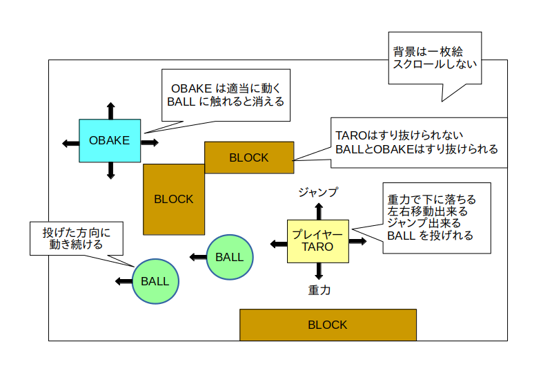
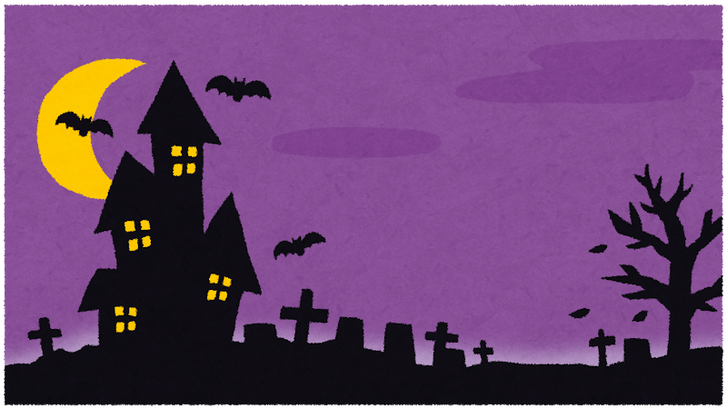

次は要求仕様書を元に全体設計を行って全体仕様書を作成します。
今回は以下の様な全体仕様書を作成しました。
TARO と OBAKE
2D ジャンプアクション
Who（〜が）: TARO が
When（〜の時代に）: 中世の
Where（〜において）: ヨーロッパのお墓で
Why（〜のために）: 現代日本に戻るため
How（〜することで）: OBAKE にボールを当てて
What（〜をする）: 退治する
動作環境: パソコン
開発環境: Unity
10歳以上のライト層
ディレクター: 自分
企画: 自分
デザイン: 自分
プログラム: 自分
サウンド: 無し
中世ヨーロッパ
気がついたら TARO は中世ヨーロッパにタイムスリップしていた
うろうろしてたら OBAKE が襲ってきた
現代日本に帰るため OBAKE をボールで倒す
・タイトルは無し。いきなりゲームを開始する。
・背景は一枚絵。スクロールしない
・ゲーム開始時の TARO の初期位置は画面左下
・TARO は重力により下に落ちる
・TARO は左右に動かせる
・TARO はジャンプできる
・TARO は BALL という弾を投げられる
・BALL には重力が無い
・BALL は投げた方向に動き続ける
・OBAKE は 1 種類
・ゲーム開始時に OBAKE をランダムな位置に複数匹表示する
・OBAKE には重力が無い
・OBAKE は適当に動きまわる
・OBAKE は BALL に当たると消える
・BLOCK という障害物を作る
・BLOCK は複数あり、それぞれ位置とサイズが決まっている
・TARO は BLOCK をすり抜けられない
・BALL は BLOCK をすり抜けられない
・OBAKE は BLOCK をすり抜けられる
ゲーム画面イメージ:

クリア条件:
・TARO が全ての OBAKE を倒す
ゲームオーバー条件:
・TARO が OBAKE に触れる
・TARO が画面の下に落ちる
ステージ名: お墓
見た目・特徴: おどろおどろしいお墓
追加フィーチャー: 無し
備考: 無し
画面イメージ:

元画像 (いらすとや)
キャラクター名: TARO
役割: 主人公
見た目・特徴: 少年
登場ステージ: 全て
備考: 無し
画像イメージ:
元画像 (いらすとや)
キャラクター名: BALL
役割: ボール
見た目・特徴: 野球のたま
登場ステージ: 全て
備考: 無し
画像イメージ:
元画像 (いらすとや)
キャラクター名: OBAKE
役割: 敵
見た目・特徴: お化け、適当に動く
登場ステージ: 全て
備考: 無し
画像イメージ:
元画像 (いらすとや)
キャラクター名: BLOCK
役割: 障害物
見た目・特徴: TARO、BALLはすり抜けられない。OBAKE はすり抜けられる
登場ステージ: 全て
備考: 無し
画像イメージ:
元画像 (いらすとや)
| 項目 | 操作方法 |
|---|---|
| TARO の左右移動 | 左右ボタン |
| TARO のジャンプ | Jump ボタン |
| TARO が BALL を投げる | Fire1 ボタン |
画面遷移無し(ゲーム画面のみ)